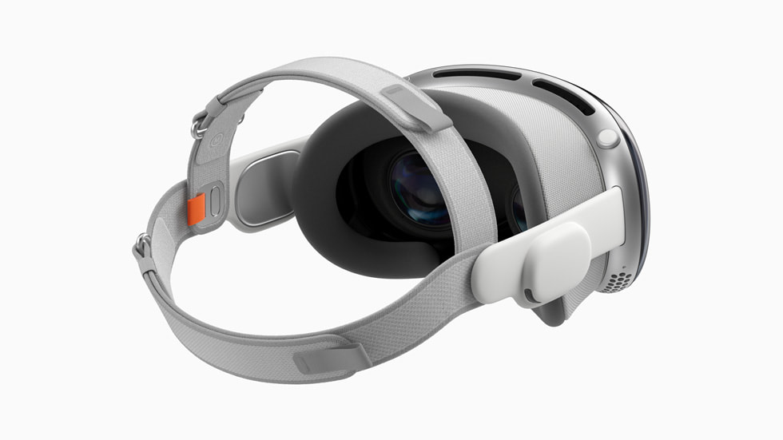

|

Apple has announced that pre-orders for the Vision Pro, their first spatial computer (VR/AR headset) will start on the 19th of January at 5am Pacific Standard Time.
It will be available to buy on February 2nd.
From Apple Newsroom:1
Apple today announced Apple Vision Pro will be available beginning Friday, February 2, at all U.S. Apple Store locations and the U.S. Apple Store online. Vision Pro is a revolutionary spatial computer that transforms how people work, collaborate, connect, relive memories, and enjoy entertainment. Vision Pro seamlessly blends digital content with the physical world and unlocks powerful spatial experiences in visionOS, controlled by the most natural and intuitive inputs possible - a user's eyes, hands, and voice. An all-new App Store provides users with access to more than 1 million compatible apps across iOS and iPadOS, as well as new experiences that take advantage of the unique capabilities of Vision Pro. Pre-orders for Apple Vision Pro begin Friday, January 19, at 5 a.m. PST.
1. https://www.apple.com/newsroom/2024/01/apple-vision-pro-available-in-the-us-on-february-2/